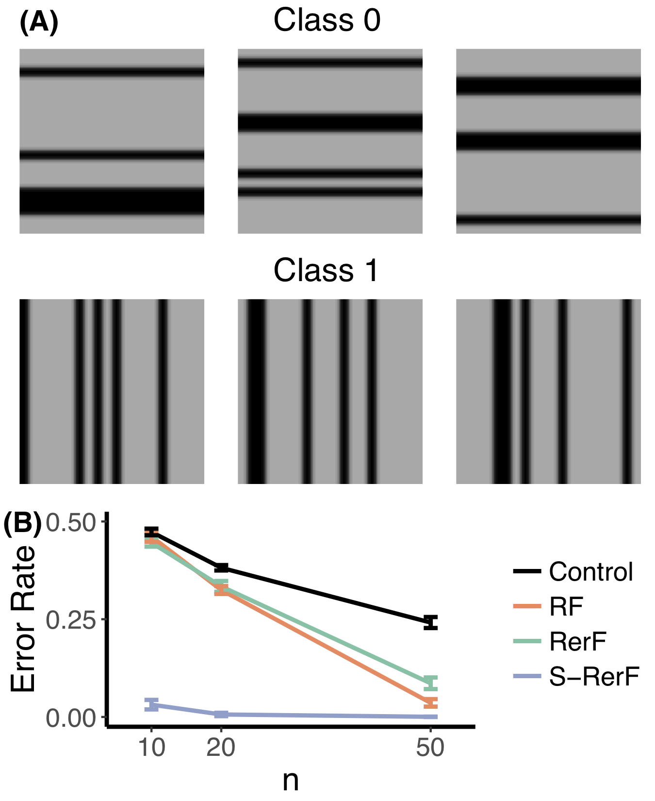

class: left, name:opening ## Lumberjack vs Deep Learning Joshua T. Vogelstein <br><br><br> <img src="images/funding/jhu_bme_blue.png" STYLE="HEIGHT:95px;"/> <img src="images/funding/KNDI.png" STYLE="HEIGHT:95px;"/> .foot[[jovo@jhu.edu](mailto:jovo at jhu dot edu) <http://neurodata.io/talks/lumberjack_vs_deeplearning.html>] --- # Background - Decision forest (RF) are things - Deep learning (DL) are other things - They share some stuff - They excel in complementary ways - Can we put all the good stuff from DL into RF? --- ### When Does RF Win? Definite wins - Classification - Caruana et al. 2006 (ICML) - low-dim classification - Caruana et al. 2008 (ICML) - high-dim classification - Delgado et al. 2014 (JMLR) - >100 classificaiton problems - Chen et al. 2016 (KDD) - Kaggle competitions - Independence testing Likely wins: - K-sample testing - Manifold learning - Conditional entropy and mutual information - Regression --- ### Lumberjack (LJ) does even better <br><br> <img src="images/rerf_perf.png" style="width: 800px;"/> --- ### When does DL Win? - Image classification - Image localization - Translation - Speech to Text - Reinforcement Learning --- ### What are the shared properties for when DL beats RF? Assume $(x_i,y_i) \sim F$, $x_i \in \mathcal{X}$, $y_i \in \mathcal{Y}$ where $|\mathcal{Y}|=K$, and $i \in [n]$ 1. n is large, 2. K is large, and 3. X is "structured". For example, if X is the space of images, and therefore can be represented by R<sup>p x 2</sup>, where the first column corresponds to the magnitude of the pixel, and the 2nd column corresponds to the index/location of the pixel. Then, there exist F such that MI(X,Y) > MI(X(1,:),Y). --- ### What properties does DL have that RF does not? Alternately, what great ideas in stats/signal processing/machine learning are not yet in RF? 1. Rescaling 2. Kernel Smoothing 2. Matching Pursuit 3. Representation Learning 3. Importance Sampling / Empirical Bayes <!-- 1. At each level, the representation of data is updated 2. Structure of data is encoded in structure of estimator 3. Features are learned from the data --> --- ### Can we get those properties into RF? # Yes --- ### Rescaling DL updates data representation per level, <br> So do brains, RF does not. 1. RF is invariant to monotonic transformations of the data, 1. .r[LumberJack] (LJ) is not. 2. LJ could rescale to [0,1] linearly or via ranks 3. Can do after each split 4. Thus, all features are updated after each split, in a data-split dependent fashion --- class: center, middle <img src="images/Fig4_benchmark_ranks.png" style="height: 600px;"/> --- ### Kernel Smoothing - Histograms can be improved by kernel density estimators (they are a special case) - KDE (and DL) utilize "indices", not just magnitudes, without sacrificing consistency 1. RF is invariant to permuting pixels 2. DL is not 3. Structured LJ (S-LJ), which samples *patches* rather than *pixels*, is also not --- class: left, middle  S-LJ is just a first step, *patches* can be replaced by an arbitrary kernel/dictionary, e.g., gabor filters or scattering networks, etc. --- ### Matching Pursuit 1. KDE fixes the kernel, or learns the bandwith 2. Matching pursuit tries many kernels at each location, and chooses the best 3. RF can be thought of as matching pursuit 4. Replace *single* kernel with a dictionary of kernels --- ### Representation Learning In DL, features are learned from the data 1. When S-LJ starts with features, it can linearly combine them 2. One can "keep" the used/learned features, to add them to the dictionary --- ### Empirical Bayes / Importance Sampling 1. S-LJ starts with a set of "features/atoms" 2. Various recent proposals to weight feature sampling probabilities 3. Various recent proposals for computing feature importance 4. With LJ, one could analytically update feature weights using importance from previously learned trees --- <img src="images/lumberjack_mobius.png" style="height: 600px;"/> --- ### What to Do? 1. Incorporate node specific rescaling 2. Replace standard basis with suitable (adaptive) dictionaries 3. Incorporate iterated feature weights using feature importance 5. Run some experiments --- ### Experiment #1 Setting - Take CIFAR-10 - Subsample classes so that K=2 - Permute the indices of the images - Determine the current best DL algorithm on this dataset Evaluation - Compare accuracy of LJ vs DL as a function of sample size. - Also compare "rescaling" LJ (which may be required even for this) --- ### Experiment #2 Setting - Same as Experiment #1, but without permuting indices Evaluation - Add S-LJ - Replace standard basis with suitable dictionary - Add iterated feature importance sampling --- ### Experiment #3 Setting - Same as experiment #2, but let K=10 again. Evaluation - Same as experiment #2 - Note that RF for K>2 gets a bit wonky, we might need to think about that more --- ### Experiments #4-#6 Same as #1-#3, but replace images with something on speech (with Sanjeev) --- ### Speeding up LJ Training Implementation Changes 1. James has some ideas that just change implementation, not algorithm 3. Distributed implementation Algorithm Changes 1. Subsample as in U-RerF 2. Quantize features 2. Recursive partitioning approach, ie, test each feature to see which has the most information about Y, and then find the best split for that 1. avoids checking each split point for each feature, 2. enables treating categorical and continuous features in the same fashion --- ### Next Steps: Who Wants What? Experiments 1. Vision 2. Speech 3. Other? Algorithm 3. Node rescaling 4. Dictionaries 5. Updated feature importance 6. Feature sampling probabilities Computational Efficiency 4. Recursive partitioning 2. Subsample/Quantize 1. C++/Python bindings 5. Distributed implementation --- ### Papers to Write 1. LJ with dictionaries 2. LJ Posterior sampling 3. LJ w/transformations (0-1, rank, subsample, quantize) 1. LJ manifold learning 1. LJ info theory 1. LJ hypothesis testing 1. Fast LJ implementation 1. Each modality experiments --- ### Next Steps 1. Dealing better with large K 1. Multi-modal LJ --- ### References - Lumberjack [[1]](https://arxiv.org/abs/1506.03410) - Forest Packing: Fast, Parallel Decision Forests [[3]](https://arxiv.org/abs/1806.07300) - Lumberjack R package: [CRAN](https://cran.r-project.org/web/packages/rerf/index.html) --- class: top, left ### Acknowledgements <div class="container"> <img src="faces/cep.png"/> <div class="centered">Carey Priebe</div> </div> <div class="container"> <img src="faces/randal.jpg"/> <div class="centered">Randal Burns</div> </div> <div class="container"> <img src="faces/cshen.jpg"/> <div class="centered">Cencheng Shen</div> </div> <div class="container"> <img src="faces/minh.jpg"/> <div class="centered">Minh Tang</div> </div> <div class="container"> <img src="faces/percy.jpg"/> <div class="centered">Percy Li</div> </div> <div class="container"> <img src="faces/tyler.jpg"/> <div class="centered">Tyler Tomita</div> </div> <div class="container"> <img src="faces/james.jpg"/> <div class="centered">James Browne</div> </div> <div class="container"> <img src="faces/falk_ben.jpg"/> <div class="centered">Ben Falk</div> </div> <div class="container"> <img src="faces/jesse.jpg"/> <div class="centered">Jesse Patsolic</div> </div> <div class="container"> <img src="faces/loftus.jpg"/> <div class="centered">Alex Loftus</div> </div> <div class="container"> <img src="faces/veronika.jpg"/> <div class="centered">Veronika Strnadova</div> </div> <span style="font-size:200%; color:red;">♥, 🦁, 👪, 🌎, 🌌</span> <img src="images/funding/nsf_fpo.png" STYLE="HEIGHT:95px;"/> <img src="images/funding/nih_fpo.png" STYLE="HEIGHT:95px;"/> <img src="images/funding/darpa_fpo.png" STYLE=" HEIGHT:95px;"/> <img src="images/funding/iarpa_fpo.jpg" STYLE="HEIGHT:95px;"/> <img src="images/funding/KAVLI.jpg" STYLE="HEIGHT:95px;"/> <img src="images/funding/schmidt.jpg" STYLE="HEIGHT:95px;"/> ### Questions?